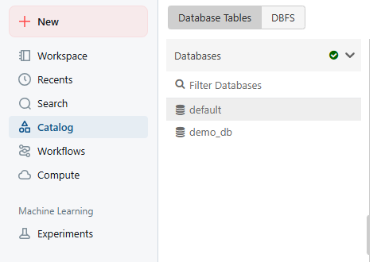
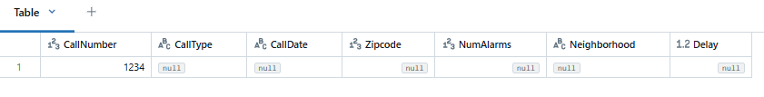
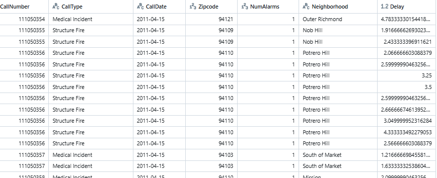

In this tutorial, we will mainly use sql queries on spark Table. To create new Notebook in databricks community make sure to choose sql as default language.
Lets create a new database below.
create database if not exists demo_db
You can see the created database by clicking the catalog in databrick community or by running the query - show database.

you can see 2 databases here. Spark creates one default database for us, if you create a table it will created inside the default database but we will use demo_db database and keep the tables inside this db.
Note: The database will be removed when the cluster is terminated. So when you create new cluster, you have to create again new database.
Once your cluster is terminated, Databricks will clean up the following things.
Cluster VM (Compute Layer)
Spark Metadata Store
compute and metadata layers are permanently gone.
Creating table will follow a create table DDL statement. Below is the query:
create table if not exists demo_db.fire_service_calls_tbl( CallNumber integer, CallType string, CallDate string, Zipcode integer, NumAlarms integer, Neighborhood string, Delay float ) using parquet
Every database table internally stores data in files. We have used parquet file format.
we can use the insert-into command to insert some records into the table in a traditional database table.
insert into demo_db.fire_service_calls_tbl
values(1234, null, null, null, null, null, null)
we use select * expression to see the content of the table.
select * from demo_db.fire_service_calls_tbl

We have inserted the data into spark table but it is not the proper way to insert into spark tables because spark tables are expected to hold big data meaning millions of records.
The insert into values expression doesn't make much sense in the big data world. You will not find a project that uses insert into values to load data into Spark tables.
Then how do we load data into Spark tables?
There are many ways but for now, we will insert records into the table from another table.
insert into demo_db.fire_service_calls_tbl select * from global_temp.fire_service_calls_view
We created this global temporary table in the previous lecture.
select * from demo_db.fire_service_calls_tbl
